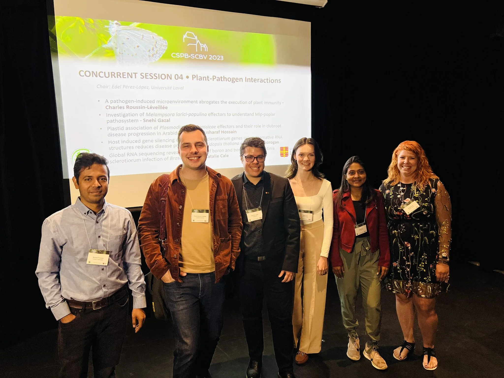
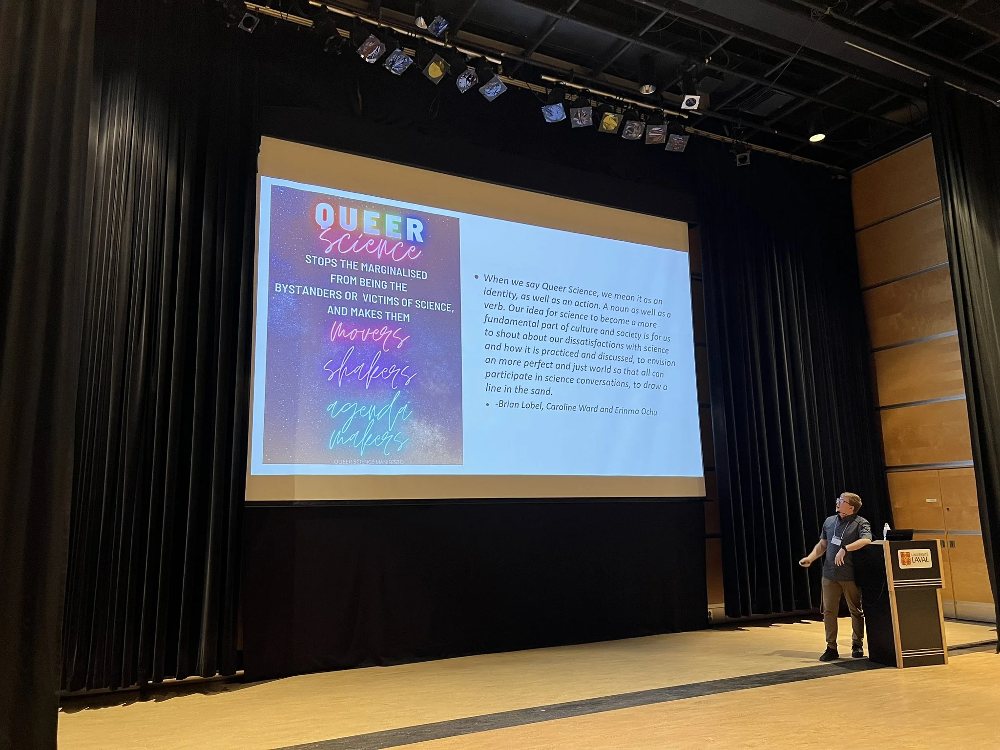

Enregistrez pour
recevoir les alertes des événements du CPICS.
2023-04-07
Étiez-vous à la conference da la SCBV 2023 à l’U. Laval?
Le Centre SÈVE était bien représenté (et le CPICS aussi) cette année,
avec plusiers présentations orales et par affiche par des étudiant·e·s,
des postdocs et des professeur·e·s de l’UQTR, l’UQAM, l’UdeS, McGill,
l’ULaval, l’UQAR et d’autres universités!
Nous félicitons Charles
Roussin-Léveillée pour recevoir mention honorable pour le Prix
Ragai Ibrahim pour son article scientifique sur des
effecteurs conservés utilisés par des bactéries pour créer en
environement aqueux dans l’apoplast des feuilles. Il a aussi reçu le
Prix Relève Étoile du FRQNT pour le meme article. Bravo,
Charles!!!
Dr. Peter
Moffet, superviseur de recherche de Charles et directeur du Centre
SÈVE, a reçu le Prix Mary Spencer pour sa recherche remarquable
et son activité dans la communauté de biologie végétale. Félicitations,
Peter!
2 / 5

Session sur les interactions plante-microbe
4 / 5

Dr. Landon Getz a parlé sur
la necessité de la représentation des minorités, specifiquement la
communauté LGBTQIA+, dans la science et il a présenté la communauté
Pride in Microbiology. (tweet
de Edel Perez-Lopez)
❮
❯
2023-04-07
Saviez-vous que l’école d’été du Centre SÈVE cette année était Maroc?
Oui, la Mohammed VI
Polytechnic University a accuilli plusieurs étudiant·e·s et
professeur·e·s pour cette oportunité extraordinaire d’apprentissage.
Snehi
Gazal, notre vice-présidente, et Prabhjot
Sanghera, notre secrétaire, ont présenté leurs projets, visité la
région et appris sur la culture marocaine.
Cliquez
ici pour lire plus sur leurs expériences.

2023-04-07
Nous souhaitons la bienvenue à nos nouveaux membres Prabhjot
Sanghera, secrétaire qui commence ça maitrise à l’Université McGill,
et Charlotte
Blasi, trésorière qui est à la fin de son doctorat à l’Université
Sherbrooke.
Maintenant, avec le comité complet, nous pouvons planifier l’année.
Nous esperons vous voir à la conference de la [Societé Canadienne de
Biologie Végétale] à Québec en Juin!
2023-02-24
Avec le nouvel an, le temps est arrivé pour renouveler notre
comité!
Le 23 février, nous avons acueilli au CPICS Arghavan
Arjmandi et Valeria
Parra, comme VP aux Communications, Rohith
Grandhi et Ayoub
Bouhadada, comme VP aux Réseautages, et Arnold
William Tazon, comme secrétaire. Bienvienu·e·s!
Aussi, notre secrétaire de longue date, Aracely
Maribel Diaz Garza, est devenu président, aidée par nottre ancienne
VP aux communications, Snehi
Gazal. Merci pour votre leadearship!
Nous voulons remercier nos membres qui partent du comité pour leur
travail ces dernieres années: Nicolas
Sene, Serge
Nouemssi, Théo
Devèze et Jennifer
Paillassa. Karen
Cristine Goncalves, notre ancienne secrétaire, a quitté le poste et
est maintenant exclusivement notre concepteur de sites Web. Merci à tous
pour votre travail!
Finalement, nous avons encore des places pour un·e secrétaire qui
parle français et pour des trésoriers. Si tu es intéressé·e, inscris ton
nom dans notre liste de diffusion pour
recevoir le lien de la prochaine réunion (le 6 avril à 15h).